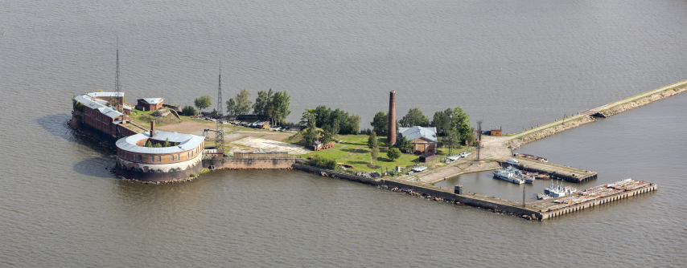
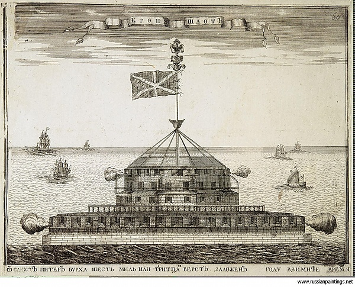

Исторический город Кронштадт
Кронштадт - древний русский город и морской порт на острове Котлин в Финском заливе. Основан в 1703 году Петром I как крепость для защиты Санкт-Петербурга. На протяжении веков Кронштадт играл важнейшую роль в обороне страны и стал символом воинской славы Российской империи и СССР.
Форты Кронштадта
Форт Константин

Форт Константин – объект культурного наследия, основанный в 1808 году, и один из крупнейших фортов Кронштадта. Сегодня это круглогодичный комплекс для семейного отдыха!
Подробнее о форте Константин →Форт «Александр I» (Чумной)

Форт «Алекса́ндр I» — одно из долговременных оборонительных сооружений, входящих в систему обороны Кронштадта. Расположен на небольшом искусственном островке к югу от острова Котлин. С 1899 по 1917 год использовался как лаборатория по исследованию чумы.
Подробнее о форте Александр I →Форт «Пётр I» (Цитадель)

Форт «Пётр I» — памятник истории и архитектуры XVIII века. Создан для защиты Купеческой гавани с юга. Находится под охраной государства.
Подробнее о форте Пётр I →Форт «Кроншлот»

Форт «Кроншлот» — памятник истории и архитектуры XVIII века. Расположен к югу от Кронштадта. Создан для защиты города от шведов во время Северной войны в 1704 году, несколько раз перестроен. Находится под охраной государства.
Подробнее о форте Кроншлот →Форт Павел I

Строительство сооружения начали в 1739, из дерева. Завершено строительство было в 1801. Батарею назвали «Рисбанк» — в переводе с немецкого «засечка на отмели». Всё это было практически уничтожено наводнением в 1824 г., но батарею восстановили.
Подробнее о форте Павел I →Форт «Граф Милютин»

Форт «Граф Милютин» (Третья Южная батарея) располагается к югу от главного фарватера, ведущего в Санкт-Петербург и был одним из самых передовых и современных в составе Кронштадтской крепости.
Подробнее о форте Граф Милютин →Задний створный маяк Морского канала

Задний створный маяк Морского канала Кронштадта. Высота конструкции от основания 41 метр, высота огня над уровнем моря 40 метров, дальность видимости 13 миль. Был построен на искусственном островке между фортом Рисбанк и Кроншлотом в 1894 году, перестроен в 1914.
Подробнее о Заднем створном маяке →